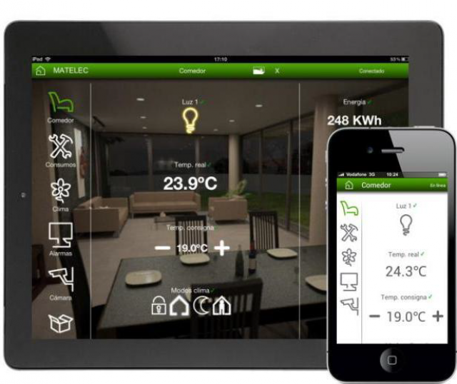
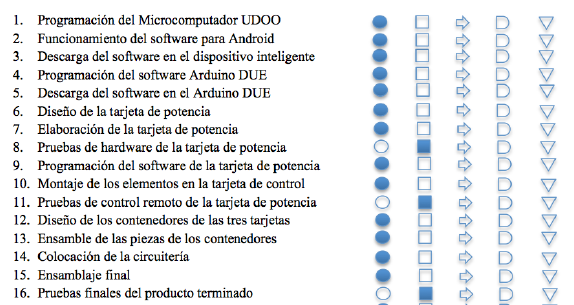

La domótica, o también conocida como Smart House, es el conjunto de tecnologías aplicadas al control y la automatización inteligente de la vivienda, que permite una gestión eficiente del uso de la energía, que aporta seguridad y confort, además de comunicación entre el usuario y el sistema.
Un sistema domótico recoge información proveniente de unos sensores o entradas, la procesa y emite órdenes a unos actuadores o salidas. El sistema puede acceder a redes exteriores de comunicación o información. La red de control del sistema domótico se integra con la red de energía eléctrica y se coordina con el resto de redes con las que tenga relación: telefonía, televisión, y tecnologías de la información. Las distintas redes coexisten en la instalación de una vivienda o edificio.
Control del nivel de intensidad y escenarios lumínicos, programación de horarios de encendido y apagado y sensores de presencia.
Control de apertura o cierre a distancia, por horarios o reloj astronómico.
Activación horaria programada de los sectores de riego.
Accesos controlados mediante sistemas biométricos, digitales o faciales según horarios o fechas predeterminadas.
Visualice en vivo lo que sucede en su hogar u oficina desde cualquier dispositivo inalámbrico conectado a internet.
Protección global o parcial de su propiedad. Detección de intrusión o fallas técnicas, como humo, gas, inundación. Notificación en tiempo real de los eventos en su celular.
Control a distancia y programación de la temperatura ambiente de los diferentes sistemas. Split, VRV o losa radiante.
Instalación de redes de datos y wifi para una cobertura eficiente en toda la vivienda.
Sistemas avanzados para salas de cine y audio multiroom para un experiencia multimedial integrada en tu hogar.
La Arquitectura de los sistemas de domótica hace referencia a la estructura de su red. La clasificación se realiza en base de donde reside la “inteligencia” del sistema domótico. Las principales arquitecturas son:
En un sistema de domótica de arquitectura centralizada, un controlador centralizado, envía la información a los actuadores e interfaces según el programa, la configuración y la información que recibe de los sensores, sistemas interconectados y usuarios.
Pros: La gran característica de este tipos de sistemas es su gran potencia e inteligencia. Ya que suele ir administrada por procesadores muy potentes, ideal para integraciones de gran complejidad y donde tenemos que convivir con diferentes sistemas donde tendremos que procesar gran cantidad de información a gran velocidad. Este tipo de sistemas son los favoritos de los grandes integradores por su versatilidad a la hora de integrar y flexibilidad de programación haciendo posible los deseos de los clientes más exigentes.
Contras: Al ser un sistema centralizado toda la responsabilidad del sistema recae en la Master, en cuya falta todo deja de funcionar. Pero este es un aspecto que no ha de abrumarnos, por que este mismo problema lo tienen también los sistemas distribuidos, por que si se le cae la fuente de alimentación que alimentan al bus tienen el mismo problema, se cae todo el sistema.
Marcas y protocolos: Esta arquitectura es la más utilizada por los sistemas propietarios donde las marcas desarrollan sus propios protocolos y donde desarrollan los últimos avances a gran velocidad sin ataduras de grandes alianzas. Son grandes marcas como Vantage, AMX, RTI, Crestron, Control4, Savant, etc.

En un sistema de domótica de Arquitectura Descentralizada, hay varios controladores, interconectados por un bus, que envía información entre ellos y a los actuadotes e interfaces conectados a los controladores, según el programa, la configuración y la información que recibe de los sensores, sistemas interconectados y usuarios.
Pros: Entre sus ventajas destaca la posibilidad de hacer un rediseño de la red, tienen un reducido cableado, se puede ampliar fácilmente y ofrece una gran seguridad de funcionamiento.
Contras: Los puntos en contra son que sus elementos de red no son universales y hay cierta limitación, reducida ampliación y requiere de programación.

En un sistema de domótica de arquitectura distribuida, cada sensor y actuador es también un controlador capaz de actuar y enviar información al sistema según el programa, la configuración, la información que capta por si mismo y la que recibe de los otros dispositivos del sistema.
Pros: La gran característica de este sistema es que cada dispositivo tiene una autonomía propia, lo cual le proporciona una gran seguridad al sistema, coloquialmente diríamos que hacemos un reparto de responsabilidad, y pudiendo caerse partes del sistema y seguir funcionando otras. Otro gran ventaja de estos sistemas es que son ideales para reformas, ya que por su tipo de arquitectura podemos distribuir la instalación no estando obligados a llevar todo el cableado a un cuadro o rack electrico, las marcas que lo fabrican suelen tener muchas buenas soluciones para ello.
Contras: Es que al tener la inteligencia repartida por pequeños dispositivos en pequeños procesadores que sólo acometen sus pequeñas funciones en su programa de aplicación, no podemos obtener gran potencia del sistema, y para cualquier cosa de una muy simple lógica, como por ejemplo un reloj, operaciones lógicos,etc., tendremos que comprar módulos para ello. También al estar preprogramados para funciones especificas no suelen ser demasiado flexible a la hora de programar.
Marcas y protocolos: Hay que decir que este tipo de arquitectura es la utilizada por excelencia por los sistemas estandar, aunque también la utilizan muchos sistemas propietarios.Un ejemplo de marcas o protocolos que utilizan esta arquitectura son: Knx, Lonworks, Dynalite, Enocean, Hdl, etc.
En un sistema de domótica de arquitectura híbrida (también denominado arquitectura mixta) se combinan las arquitecturas de los sistemas centralizadas, descentralizadas y distribuidas. A la vez que puede disponer de un controlador central o varios controladores descentralizados, los dispositivos de interfaces, sensores y actuadores pueden también ser controladores (como en un sistema “distribuido”) y procesar la información según el programa, la configuración, la información que capta por si mismo, y tanto actuar como enviarla a otros dispositivos de la red, sin que necesariamente pasa por otro controlador.

Funcionan conectandolos a una red Wi-fi

Los Controladores son el cerebro de la casa inteligente. Gestionan los dispositivos del Sistema e integran productos de otros fabricantes.

Son el nexo entre el Controlador y los artefactos de tu hogar. Permiten accionar sistemas de iluminación, cortinas y pequeños motores, sistemas de climatización, alarmas de seguridad, etc.
Productos integrados IP / WiFi y ZigBee de otros fabricantes. No requieren ninguna otra conexión y pueden ser utilizados individualmente.
La domótica del hogar no pasa necesariamente por un servidor domótico. Hay soluciones muy básicas que no requieren de ningún dispositivo de control domótico específico, y también es posible recurrir a un ordenador, Mac o Pc, o a otro tipo de dispositivos, para controlar nuestra instalación domótica, en cuyo caso necesitamos dos cosas más: un dispositivo que hace las veces de interfaz entre el ordenador y los módulos domóticos, y un software de control.
Hoy en día existen software de control domótico Open source, como por ejemplo Domoticz. Son software libres de control domótico disponibles para las plataformas Windows y Linux. Eso nos abre muchas posibilidades ya que nos permite montarnos un centro de control domótico low cost, lo que no significa en absoluto que sea una solución menor.
Generalmente se caracterizan por consumir pocos recursos del sistema y ofrecer soporte para diversos protocolos domóticos, como Z-Wave, RF, X10, EnOcean… Los dispositivos domóticos que pueden controlar son pues muy numerosos y variados, además de cámaras IP. Por si todo eso fuera poco, permite crear dispositivos virtuales y admite scripts. La interfaces son sencilla y adopta la filosofía de que puedan ser usados por todos los miembros del hogar.
Antes de optar por esa solución, hay que tener presente que necesitamos, aparte de un ordenador con Windows o Linux, un dispositivo que hará las veces de interfaz con los módulos y el protocolo domóticos elegidos. Entre los dispositivos que podemos mencionar esta pequeña tarjeta RaZberry, que se conecta al puerto GPIO de la Raspebrry Pi, convirtiendo ésta fácilmente en un centro de control domótico.
Existen tambien APPs Mobile que permiten el control de ciertos dispositivos del hogar. Algunas han sido desarrolladas por los mismos fabricantes de los artefactos domésticos.
Daremos una lista de las aplicaciones mas descargadas por los usuarios y describiremos a grandes rasgos sus usos:
Esta aplicación para dispositivos ios de apple o android que te permite controlar tu casa de una forma rápida e intuitiva. Con ella podrás manejar a distancia y en tiempo real dispositivos knx (luces, persianas, climatización…), audiovisuales (televisión, dispositivos de audio, DVD…), videoporteros y cámaras ip (axis y mobotix) estés donde estés
App que permite controlar en remoto los productos de iluminación hue de la marca philips que tengas en casa desde el iphone o el ipad. Permite configurar la iluminación idónea para cada ocasión. También disponible para android
App para iphone, ipad e ipod touch que permite controlar en remoto la iluminación, electrodomésticos, calefacción, sistema de riego de plantas y otros dispositivos domésticos. Enlaza con el software de control del hogar indigo v4.1 + (debe estar instalado en la casa), para comunicarse con hardware compatible con insteon y x10
App para ios y android destinada al control domótico de la vivienda, con diferentes menús que permiten gestionar elementos como la climatización, iluminación, persianas y cerramientos, equipos eléctricos genéricos, alarmas de inundación, de incendio, de intrusión.
App de schneider electric para dispositivos con sistema operativo ios de apple y android que permite controlar y supervisar en tiempo real la instalación domótica knx desde cualquier lugar, ya sea desde la propia instalación o desde cualquier lugar del mundo vía Internet
App domótica para iphone y ipad que sirve para controlar el hogar o la oficina de forma remota. Funciona con sistemas myhome y requiere el gateway bticino legrand
App para ios de apple y android que permite la supervisión y control de equipos que utilizan tecnología io-homecontrol: persianas, puertas de garaje, tragaluces, puerta de entrada, sistemas de iluminación... tanto si estás en casa como si estás fuera
Para poder brindar un equipo con las mas altas prestaciones y totalmente a medida, es posible realizar desarrollos propios y la construcción de un sistema domótico.
Para poder realizar la construcción de un producto se deben de tener en cuenta las características, especificaciones y los materiales que se va a implementar. Minimamente para encarar este proceso vamos a necesitar:
Una computadora portatil o de escritorio que sea ideal para un trabajo pesado como programación y manejo de datos a gran velocidad
Una tarjeta Arduino Due, minimamente con un procesador de 32 bits a 84 Mhz, con puertos USB, entradas y salidas.
UDOO es una microcomputadora que puede funcionar bajo Linux o Android . Se utiliza para el manejo de los datos.
Para el desarrollo de nuestra aplicación o programa domótico va a ser necesario seguir una serie de pasos. Los cuales involucran descarga de programas, pruebas de hardware y circuitos, desarrollo y programación de microporcesadores y tarjetas.
Por lo cual, realizar el software a medida tambien involucra diseñar y manipular el hardware. De este modo, nuestro costo de producción (en comparación con las alternativas anteriormente presentadas) es mucho mas elevado. Vamos a tener que considerar: Mano de obra (Personal capacitado para desarrollar estas tareas), Materiales y Herramientas. La producción de un software de domótica propio puede costar aproximadamente (en dolares):
123-456-6789


{kind=link}